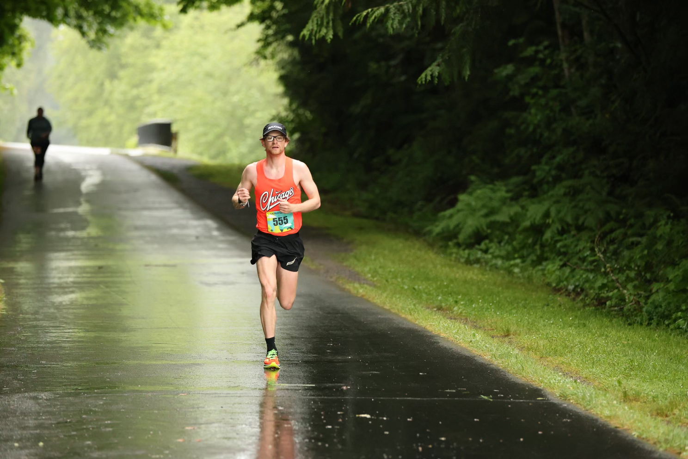

Marcus Graham

Country: United States
School: University of Colorado, Colorado Springs
DOB: 5/28/1999
Personal Bests:
10000m - 29:26.98
Half-Marathon - 1:05:58
Marathon - 2:17:31
2024 USA Olympic Marathon Trials Qualifier. Competed in multiple NCAA II Cross Country and Track Championships. Pursuing counterterrorism/cybersecurity work.

Twitter: @mgham17